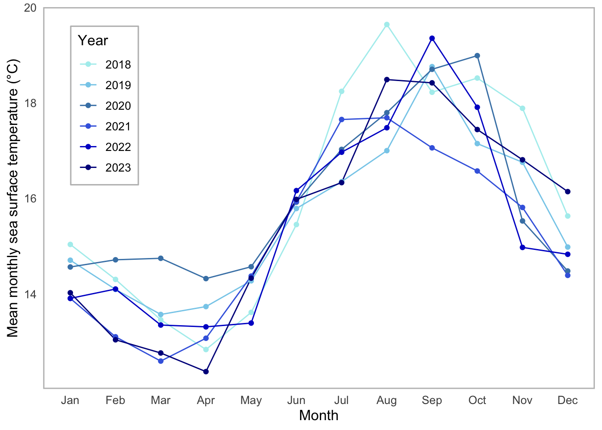
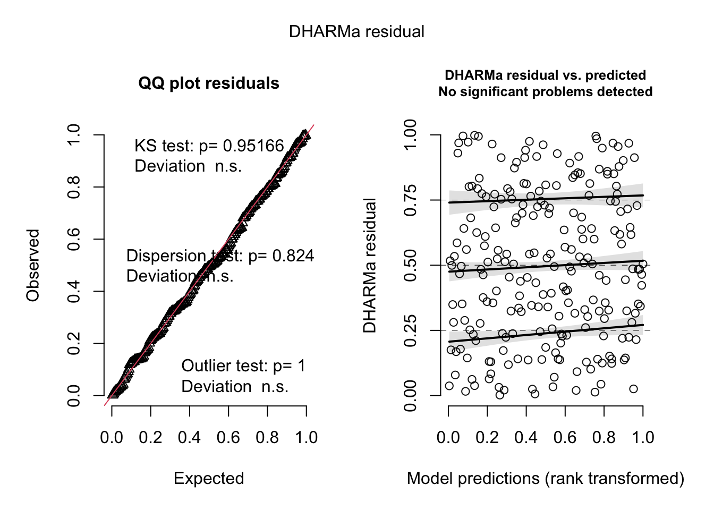
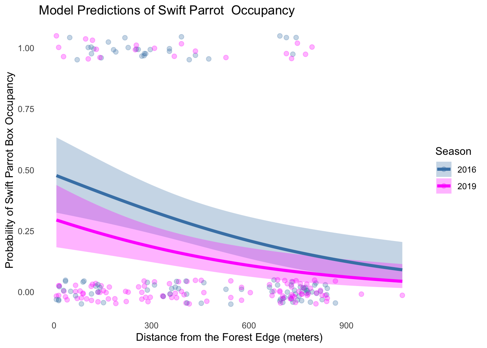

knitr::opts_chunk$set(echo = TRUE, message = FALSE, warning = FALSE)
library(tidyverse)
library(gt)
library(janitor)
library(dplyr)
library(here)
library(knitr)
library(lubridate)
library(readxl)
library(MuMIn)
library(DHARMa)
library(fs)
#Read in data
sst <- read.csv(here::here("data", "SST_update2023.csv")) # reading in data
nest_boxes <- read.csv(here::here("data", "occdist.csv"))ENVS 193DS Final
Name: Kate Frankland
Date: June 11, 2025
Github link: https://github.com/katefrankland/ENVS-193DS_spring-2025_final.git
Problem 1, Research Writing
(a)
- In part 1, it can be assumed that a Pearson’s correlation test was used, considering that it explicitly mentions a “correlation between distance from headwater and annual total nitrogen load”. In part 2, a one-way ANOVA test was used. In this test, a comparison was made between the mean amount of nitrogen loads depending on which source was being used (urban land, atmospheric deposition, fertilizer, wastewater treatment, or grasslands)
(b)
- An additional test that could be used is Tukey’s Honestly Significant Difference Test (HSD). A test like this would provide more information regarding source categories and nitrogen load, allowing specific groups to be identified that noticeably differ. Information about effect size could also be included, as it could help dissect differences and determine how meaningful they are, helping provide confidence in the analysis.
(c)
A statistically significant positive relationship between distance from the headwater and total nitrogen load can be identified, suggesting that nitrogen load will increase as water travels downstream. (Pearson’s r = correlation coefficient, p = 0.03, α = significance level).
We found a statistically significant difference in average nitrogen load between the five sources (urban land, atmospheric deposition, fertilizer, wastewater treatment, and grasslands), indicating that some sources will have a higher nitrogen content than others. Additional tests, including the Tukey’s HSD test, could help clarify this further. (one-way ANOVA, F = test statistic, df = degrees of freedom, p = 0.02, α = significance level).
Problem 2, Data Visualization
(a) Cleaning and Summarizing Data
sst_clean <- sst |> # beginning the sst dataframe
mutate (
date = ymd(date), # making date an object
month = month(date, label = TRUE, abbr = TRUE) |> # creating a column for months
factor(levels = month.abb, ordered = TRUE), # ordered factor for months
year = (year(date)) # creating a column for years
) |>
filter(year >= 2018, year <= 2023) |> # filtering years to include 2018 - 2023
mutate(
year = factor(year) # convert to factor
) |>
group_by(year, month) |> # group data by the year and the month
summarize(mean_monthly_sst = mean(temp, na.rm = TRUE)) |> # summarize the mean monthly sst
ungroup() # remove grouping
slice_sample(sst_clean, n = 5) # show 5 random rows # A tibble: 5 × 3
year month mean_monthly_sst
<fct> <ord> <dbl>
1 2020 Apr 14.3
2 2019 May 14.3
3 2020 May 14.6
4 2023 Jan 14.0
5 2022 May 13.4str(sst_clean) # show structure of the data tibble [72 × 3] (S3: tbl_df/tbl/data.frame)
$ year : Factor w/ 6 levels "2018","2019",..: 1 1 1 1 1 1 1 1 1 1 ...
$ month : Ord.factor w/ 12 levels "Jan"<"Feb"<"Mar"<..: 1 2 3 4 5 6 7 8 9 10 ...
$ mean_monthly_sst: num [1:72] 15 14.3 13.5 12.8 13.6 ...(b) Visualize the Data
ggplot(data = sst_clean, #creating visualization, using sst_clean data frame
aes(x = month, # month is the x axis
y = mean_monthly_sst, # meanly monthly sst is the y axis
group = year, # group data by year
color = year)) + #color data by year
geom_line(linewidth = 0.5) + #adjusting line width
geom_point(size = 1.5) + # adjusting point size
scale_color_manual(values = c( #color the lines different shades of blue
"2018" = "paleturquoise",
"2019" = "skyblue",
"2020" = "steelblue",
"2021" = "royalblue",
"2022" = "blue3",
"2023" = "blue4"
)) +
labs(x = "Month", # editing x-axis label title
y = "Mean monthly sea surface temperature (°C)", # editing y axis label title
color = "Year" # legend title
) +
theme_minimal(base_size = 12) + #apply minimal theme, font size 12
theme(
panel.background = element_rect(fill = "white", color = NA), # create a white background
panel.grid.major = element_blank(), # remove grid line colors
panel.grid.minor = element_blank(), # remove grid line colors
panel.border = element_rect(color = "gray", fill = NA, linewidth = 1), # add a border color
legend.position = c(0.05, 0.95), # positioning the legend
legend.justification = c(0,1), # positioning legend
legend.background = element_rect(fill = "white", color = "gray"), # background and border colors for the legend
axis.line = element_blank() # remove axis lines
)
Problem 3, Data Analysis
(a) Response Variable
- We are using binary data here; a zero represents that the box is unoccupied, and a one represents that one of the observed species (Swift Parrot (sp), Common Starling (cs), Tree Martin (tm), or if an empty box (e)) is present.
(b) Purpose of Study
- The primary interest of this study is the Swift Parrot, considering their endangered status. The Common Starling is an introduced species, and the Tree Martin is a native competitor; both of these species may occupy the same nesting boxes intended for the Swift Parrot, which can impact the conservation efforts and success for Swift Parrots to breed.
(c) Difference in Seasons
- The years of 2016 and 2019 are being compared, and observations were taken during the winter months to observe nesting patterns. In 2016, the boxes were newly installed, and by 2019, they had been in place for a few years. A second breeding season also occurred in 2019, resulting in a shift in nest box occupancy.
(d) Table of Models
model_table <- data.frame( # create a new data frame
Model = 0:3, # use model numbers 0 to 3
Season = c("", "X", "X", ""), # create a column showing if season is included
Edge_Distance = c("", "X", "", "X"), # create a column showing if edge_distance is included
Predictor_list= c( # create a column showing predictors
"No predictors (null model)", # model 0
"All predictors (full model)", # model 1
"Season only", # model 2
"Distance to Forest Edge Only" # model 3
),
stringsAsFactors = FALSE # prevent string to factor conversion
)
kable(model_table, # create a table
col.names = c("Model Number", "Season", "Distance to Forest Edge", "Predictor List"), # column headers
caption = "Table 1. Summary of Models.", # add caption to table
align = c("c","c","c","l") # align columns
)| Model Number | Season | Distance to Forest Edge | Predictor List |
|---|---|---|---|
| 0 | No predictors (null model) | ||
| 1 | X | X | All predictors (full model) |
| 2 | X | Season only | |
| 3 | X | Distance to Forest Edge Only |
(e) Run the models
# Model 0 : Null model
model0 <- glm(sp ~ 1, # formula
data = nest_boxes_clean, # data
family = "binomial") # distribution
# Model 1: Saturated model with interaction
model1 <- glm(sp ~ edge_distance + season, # formula
data = nest_boxes_clean, # data
family = "binomial") # distribution
# Model 2: Season Only
model2 <- glm(sp ~ season, # formula
data = nest_boxes_clean, # data
family = "binomial") # distribution
#Model 3: Distance Only
model3 <- glm(sp ~ edge_distance, # formula
data = nest_boxes_clean, # data
family = "binomial") # distribution (f) Check Diagnostics
# diagnostics for model 0
plot(
simulateResiduals(model0))
# diagnostics for model 1
plot(
simulateResiduals(model1))
# diagnostics for model 2
plot(
simulateResiduals(model2))
# diagnostics for model 3
plot(
simulateResiduals(model3))
(g) Select Best Model
AICc( #AICc to check different AICc values for each model
model0,
model1, # model 1 will be the best model
model2,
model3
) |>
arrange(AICc) #arranging output so that the lowest AICc is first df AICc
model1 3 226.3133
model3 2 229.6716
model2 2 236.3744
model0 1 238.8318(h) Visualize the Model Predictions
min_edge <- min(nest_boxes_clean$edge_distance, na.rm = TRUE) # minimum edge_distance
max_edge <- max(nest_boxes_clean$edge_distance, na.rm = TRUE) # maximum edge_distance
edge_seq <- seq(min_edge, max_edge, length.out = 100) # create a sequence for the edge_distances
seasons <- levels(nest_boxes_clean$season) # make levels for seasons a factor
new_data <- expand.grid( # making new data frame, expanding grid
edge_distance = edge_seq,
season = seasons
)
pred <- predict(model1, newdata = new_data, type = "link", se.fit = TRUE) # find model predictions
new_data <- new_data |> # add predictions and 95% confidence intervals
mutate(
fit = pred$fit, # predicted logit values
se_fit = pred$se.fit, # standard errors for predictions
lower = plogis(fit - 1.96 * se_fit), # lower 95% confidence interval bound
upper = plogis(fit + 1.96 * se_fit), # upper 95% confidence interval bound
predicted_prob = plogis(fit) # predicted probability
)
ggplot() + # begin visualization, plot data and model predictions
geom_jitter( # add raw data points
data = nest_boxes_clean,
aes(
x = edge_distance, # make x axis the distance from the forest edge
y = sp, # make y axis reprsent swift parrot presence
color = season), # color points by season
width = 0, # no jitter horizontally
height = 0.05, # smal jitter vertically
alpha = 0.3, # add some transparency
size = 2 # add size for points
) +
# Add 95% Confidence Interval Ribbon
geom_ribbon(
data = new_data,
aes(x = edge_distance,
ymin = lower, # lower confidence bound
ymax = upper, # upper confidence bound
fill = season), # fill by season
alpha = 0.3, # add transparency
color = NA # remove ribbon border color
) +
# Add Prediction Lines
geom_line(
data = new_data,
aes(
x = edge_distance,
y = predicted_prob, # predicted probability
color = season), # color lines by season
size = 1.5 # add thickness to the lines
) +
# Add New Colors
scale_color_manual(values = c("2016" = "steelblue", "2019" = "magenta")) +
scale_fill_manual(values = c("2016" = "steelblue", "2019" = "magenta")) +
labs( # add labels
x = "Distance from the Forest Edge (meters)", # label x axis
y = "Probability of Swift Parrot Box Occupancy", # label y axis
title = "Model Predictions of Swift Parrot Occupancy", # add a title
color = "Season", # legend title for line color
fill = "Season" # legend title for fill
) +
theme(panel.background = element_blank(), # remove background
axis.line = element_blank(), # remove grid lines
axis.ticks = element_blank() # remove ticks
)
(i) Figure Caption
Figure 1. Swift Parrot Nest Box Occupancy Predicted Probability by Distance from the Forest Edge in 2016 and 2019.
The data for this figure is taken from the following: Stojanovic et al. (2021), Do nest boxes breed the target species or its competitors? A case study of a critically endangered bird https://doi.org/10.5061/dryad.83bk3j9sb. This figure displays the modeled probability of the Swift Parrot’s occupancy in nest boxes, based on their distance from the forest edge, during the breeding seasons of 2016 (blue) and 2019 (pink). The lines indicate the model estimates, shaded areas represent the 95% confidence intervals, and jitter points indicate the presence (1) or absence (0) of Swift Parrots in individual nest boxes. In both years, there is a decline in probability as distance increases. It can also be identified that probabilities are higher when boxes are closer to the forest edge in the year of 2016.
(j) Calculate Model Predictions
new_predictions <- expand.grid( # new data frame for predictions and the distances of 0 m and 900 m
edge_distance = c(0, 900), # define distances
season = factor(c("2016", "2019"),
levels = levels(nest_boxes_clean$season)) # factors should match original model
)
prediction <- predict(model1,
newdata = new_predictions,
type = "link", # predicted values for logit,
se.fit = TRUE) # include standard errors
new_predictions <- new_predictions |> # Add predicted probabilities
mutate(
fit = prediction$fit, # logit prediction
se_fit = prediction$se.fit, # standard error of fit
predicted_prob = plogis(fit), # convert to probability
lower = plogis(fit - 1.96 * se_fit), # lower 95% CI
upper = plogis(fit + 1.96 * se_fit) # upper 95% CI
)
new_predictions <- new_predictions |> #round the values
mutate(
fit = round(fit, 2),
se_fit = round(se_fit, 2),
predicted_prob = round(predicted_prob, 2),
lower = round(lower, 2),
upper = round(upper, 2)
)
new_predictions # show results edge_distance season fit se_fit predicted_prob lower upper
1 0 2016 -0.08 0.33 0.48 0.33 0.64
2 900 2016 -1.95 0.39 0.12 0.06 0.24
3 0 2019 -0.86 0.32 0.30 0.18 0.44
4 900 2019 -2.73 0.44 0.06 0.03 0.13(k) Interpret Your Results
- Considering the model predictions from our model in part j, there is a higher probability that a Swift Parrot will occupy a nest when it is closer to the forest edge. At 0m, there is a predicted probability of 0.48 in 2016 (95% CI: [0.33, 0.64]) and 0.30 in 2019 (95% CI: [0.18, 0.44]). When farther away from the forest edge at 900 m, the occupancy decreases to 0.12 in 2016 (95% CI: [0.06, 0.24]) and 0.06 in 2019 (95% CI: [0.03, 0.13]). This suggests a negative relationship between distance from the forest edge and nest box occupancy probability, and also suggests that Swift Parrots have a preference for being on the forest edge. It should also be considered that the competitive species of Common Starlings and Tree Martins tend to use older boxes or boxes farther away from the forest edge, which may influence which boxes the Swift Parrots decide to occupy.
Problem 4, Affective and explanatory visualizations
(a) Comparing visualizations
My visualizations between assignments remained largely similar. They were focused on the same dataset I collected, and while traditional box-plots were created for homework assignment 3 to analyze trends, my creative visualization didn’t vary much between assignments. In homework 3, I created my affective visualization in a bullet-journal style inspired by the Dear Data project. I used different shapes, lines, and colors to convey he data, and tried to analyze patterns using creative elements rather than numbers. Between drafts of the affective visualization, the basic format remained the same.
Patterns I noticed in my data that could be seen in the dataset, boxplots, and the affective visualization are that 7 of my 16 running days were below average in caloric intake, with the remaining being above average. I also noticed that days with below average sleep often could be correlated with lower caloric intake. These patterns stayed consistent regardless of format, but were easy to visualize with the use of color and shape in the affective visualization.
During week 9, I received positive feedback about my visualization. Most feedback emphasized that the visualization was easy to interpret and simple to understand. I received feedback that the key I created explaining the symbols and colors was cute, and I was able to take feedback from the previous week in section to edit that, making the font larger and adding an additional element to indicate days with above average mileage. Taking feedback allowed me to enhance the clarity and visual storytelling while keeping the overall design the same. Overall, my feedback was that the data was intuitive, vibrant, and enjoyable to look at.